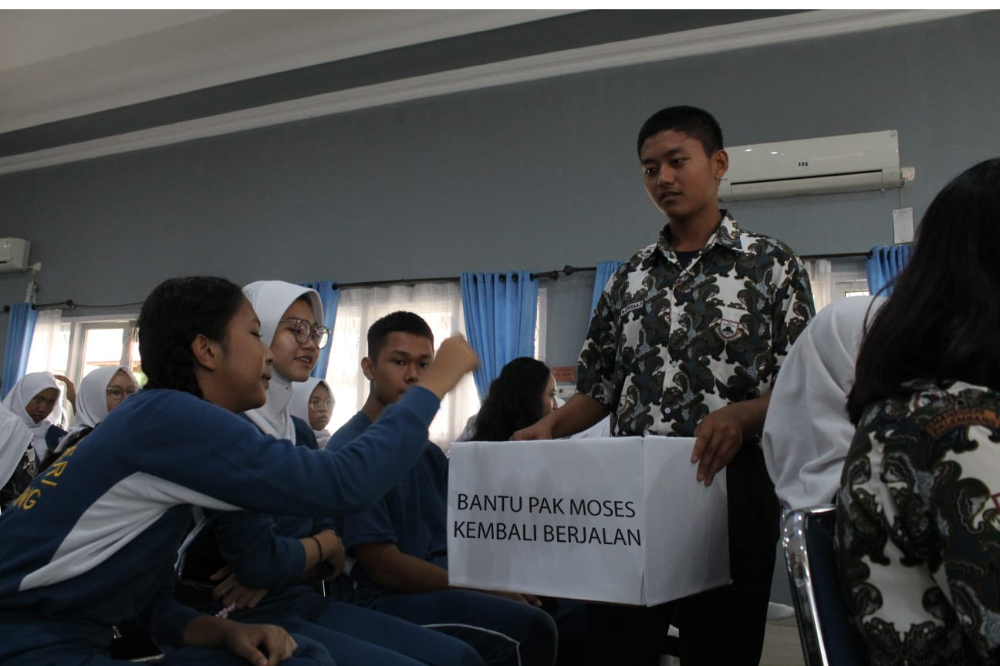

PALEMBANG, Regenerasi Osis - Pada suatu hari yang seharusnya penuh dengan kegembiraan dan kreativitas di sebuah sekolah menengah, sebuah tragedi yang tidak terduga menghantam peserta pemotretan alkena. Kejadian ini tidak hanya mengguncang semangat para siswa, tetapi juga menyisakan luka fisik dan emosional yang mendalam. Kejadian tragis ini melibatkan seorang pelajar berinisial KMA(15), seorang remaja yang tidak sengaja menyebabkan cedera serius pada rekan sekelasnya.
Pemotretan "alkena" seharusnya menjadi momen kreatif dan memorable bagi para siswa. Namun, nasib berkata lain ketika KMA, tanpa disengaja, menjadi pelaku tragedi yang melibatkan sepatu yang seharusnya tidak ada kaitannya dengan kejadian tersebut.
Kisah dimulai ketika KMA, berusaha untuk mendapatkan sudut pemotretan yang sempurna, tanpa disadari melepaskan sepatunya dalam sebuah aksi yang tak terduga. Sepatu yang tiba-tiba terlepas tersebut meluncur dengan kecepatan tinggi dan mengenai seorang siswa lain yang tengah asyik berpose. Akibat benturan yang tidak terduga, siswa tersebut mengalami cedera serius pada bagian wajah dan kepala.
Pihak sekolah segera merespons kejadian tersebut dengan segera memanggil bantuan medis dan memberikan pertolongan pertama kepada siswa yang terluka. Sementara itu, suasana di lokasi pemotretan berubah drastis dari kegembiraan menjadi kepanikan dan kekhawatiran. Guru pengawas dan rekan-rekan sekelasnya terkejut dan bingung dengan apa yang baru saja terjadi.
KMA, yang pada awalnya terlihat terkejut dan menyesal, segera diminta untuk memberikan klarifikasi mengenai kejadian tersebut. Dengan tulus, dia menyampaikan bahwa aksi melepaskan sepatunya adalah murni kecelakaan, tanpa adanya niat jahat atau kelalaian yang disengaja.
Kejadian tragis ini memicu pemeriksaan lebih lanjut terkait protokol keamanan dan pengawasan selama kegiatan sekolah. Sementara itu, siswa yang terluka dibawa ke rumah sakit untuk perawatan lebih lanjut, dan keluarganya diberitahu tentang insiden yang tidak terduga ini.
Dalam menghadapi tragedi sepatu terbang ini, penting bagi pihak sekolah untuk mengevaluasi dan meningkatkan langkah-langkah keamanan selama kegiatan ekstrakurikuler. Selain itu, perlu dilakukan pemantauan terhadap dampak emosional yang mungkin dialami oleh siswa-siswa yang menjadi saksi atau terlibat dalam kejadian ini.
Tragedi sepatu terbang ini menjadi pengingat bahwa keamanan dan kewaspadaan selalu harus menjadi prioritas utama dalam setiap kegiatan sekolah. Meskipun kecelakaan bisa terjadi tanpa disengaja, upaya pencegahan dan respons cepat dapat membantu meminimalkan risiko kejadian serupa di masa depan.
More Articles
Pojok Literasi

Pemuda
Sayang Adik
Evaluasi Smansa Fair

Atir Mencari
Atir Mencari
Suara
Pilketos